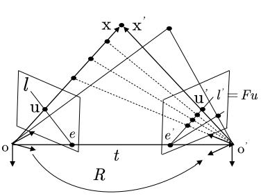
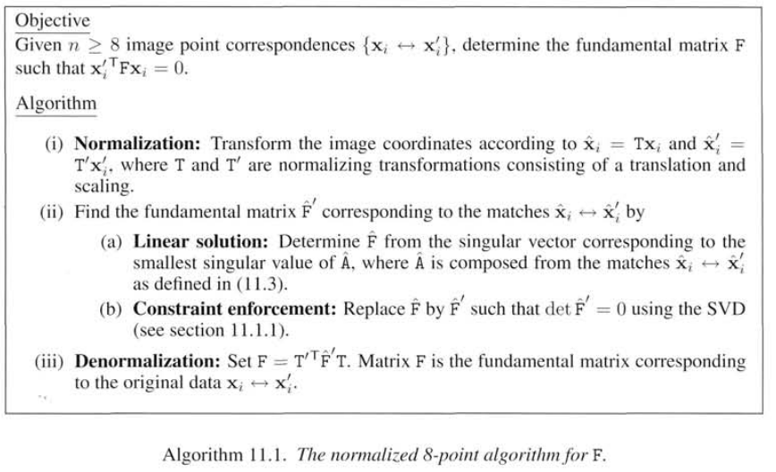
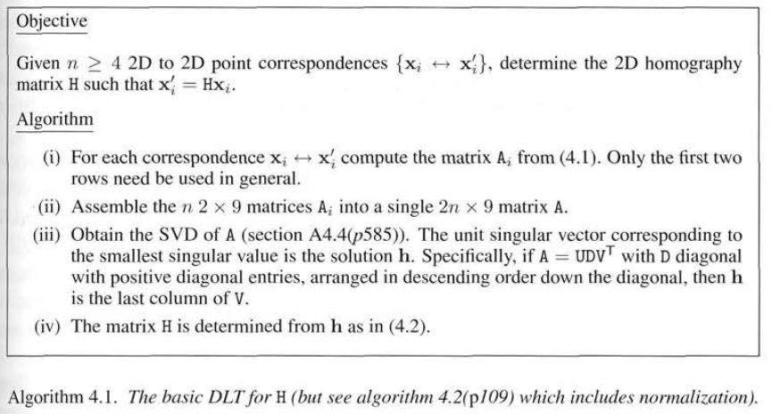
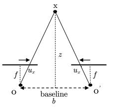
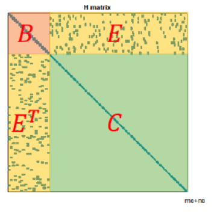

Tutorial-VSLAM
视觉SLAM1
Mario 2022-02-28
\[ a*b=|a||b|cos(\theta) \\ a \times b = |a||b|sin(\theta) \]
叉乘是面积，点乘是投影
1. 预备知识
2. 初始SLAM
3. 三维空间的刚体运动
旋转矩阵，正交矩阵 \(AA^T=E\)，行列式为1。
4. 李群与李代数
4.1 李群和李代数的基础
凤姐咬你
光滑的群就是李群
4.2 指数与对数映射
\[ R(t)R(t)^T=I\\ \dot{R(t)}R(t)^T+R(t)\dot{R(t)^T}=0\\ \dot{R(t)}R(t)^T=-(\dot{R(t)}R(t)^T)^T\\ \dot{R(t)}R(t)^T=\phi(t)^{\times}\\ \dot{R(t)}=\phi(t)^{\times}R(t)\\ 泰勒展开: R(t)\approx R(t_0)+\dot{R(t)}(t-t_0)=I+\phi_0^{\times}t\\ 关于t积分: R(t)=exp(\phi_0^{\times}t)，R=exp(\phi_0^{\times})\\ \phi=ln(R)^{\vee}=cos^{-1}(\frac{tr(R)-1}{2})+2\pi m \]
李群和李代数的关系，SO3李群与so3李代数可以相互转换，李代数指数映射就得到了李群[反方向为对数映射]，指数映射也是罗德里格斯公式（公式4.22），李代数反应了李群的导数性质，李群在原点附近的正切空间上。李代数到李群是一个满射。
类似的在SE3上 \[ exp(\xi^{\times})=\begin{bmatrix}exp(\phi^{\times})&J\rho\\0&1\end{bmatrix}=T\\ \xi=\begin{bmatrix}\rho\\\phi\end{bmatrix}\\ \xi^{\times}=\begin{bmatrix}\phi^{\times}&\rho\\0&0\end{bmatrix} \]
1 | Eigen::Matrix3d R=Eigen::AngleAxisd(M_PI/2, Eigen::Vector3d(0,0,1)).toRotationMatrix(); |
4.3 李代数求导与扰动模型
4.3.1 BCH公式
两个R相乘，在李代数上面对应一个加法。 \[ \phi_{R_1R_2}=ln(R_1R_2)^{\vee}=ln(exp(\phi_1^{\times})exp(\phi_2^{\times}))^{\vee}\\ =\left\{ \begin{array}{lr} J_l(\phi_2)^{-1}\phi_1+\phi_2,&\phi_1小量 \\ \phi_1+J_r(\phi_1)^{-1}\phi_2,&\phi_2小量 \end{array} \right. \] 在李群上面左乘小扰动时对应的李代数变换： \[ exp(\Delta \phi^{\times})exp(\phi^{\times})=exp((\phi+J_l^{-1}(\phi)\Delta \phi)^{\times}) \] 在李代数上面加上小扰动在李群上面的变换[TODO: 这边为什么是右扰]： \[ exp((\phi+\Delta \phi)^{\times})=exp(\phi^{\times})exp((J_r\Delta \phi)^{\times}) \] 在特殊欧式群上存在类似公式(4.35)
4.3.2 SO(3)李代数上的求导
李代数求导(略)
扰动模型 \[ \frac{\partial (Rp)}{\partial \varphi}=\lim_{\varphi \to 0}\frac{exp(\varphi^{\times})exp(\phi^{\times})p-exp(\phi^{\times})p}{\varphi}\\ \approx =\frac{(I+\varphi^{\times})exp(\phi^{\times})p-exp(\phi^{\times})p}{\varphi}\\ =\frac{\varphi^{\times}exp(\phi^{\times})p}{\varphi}\\ =-(Rp)^{\times} \] 同理，在SE3上，导数是一个4*6的矩阵 \[ \frac{\partial (Tp)}{\partial \delta \xi}=\begin{bmatrix}I & -(Rp+t)^{\times}\\0&0^T\end{bmatrix}=(Tp)^{\odot} \]
5. 相机与图像
5.1.1 相机模型
世界坐标系，相机坐标系，归一化平面坐标系，像素坐标系 \[ \begin{bmatrix}u\\v\\1\end{bmatrix}=\begin{bmatrix}f_x & 0 & c_x \\ 0 & f_y & c_y \\ 0 & 0 & 1\end{bmatrix}\frac{1}{z}\begin{bmatrix}x\\y\\z\end{bmatrix} \] 当知道点云的z的时候[深度相机的时候]，可以将u,v投影到3D坐标点
5.1.2 畸变
在归一化平面坐标系到像素坐标系之间，还可以加上畸变矫正 \[ r^2=x^2+y^2\\ \left\{ \begin{array}{lr} x_{distorted}=x(1+k_1r^2+k_2r^4+k_3r^6)+2p_1xy+p_2(r^2+2x^2)\\ y_{distorted}=y(1+k_1r^2+k_2r^4+k_3r^6)+p_1(r^2+2y^2)+2p_2xy \end{array} \right. \]
5.1.3 双目相机模型
双目模型，d为视差，描述同一个点在左右目上成像的距离，f为焦距，b为基线长度。 \[ z = \frac{fb}{d} \]
6. 非线性优化
Line Search: 先固定搜索方向，然后在该方向寻找步长
Trust Region: 先固定搜索步长，然后确定搜索方向
6.1 高斯牛顿法
近似求Hessian矩阵
\[ f(x+\Delta x)=f(x)+J(x)\Delta x\\ 平方: error=\frac{1}{2}[f(x)+J(x)\Delta x]^T[f(x)+J(x)\Delta x]\\ =\frac{1}{2}[||f(x)||^2+2f(x)^TJ(x)\Delta x+\Delta x^TJ(x)^TJ(x)\Delta x]\\ 对\Delta x求导: J(x)^TJ(x)\Delta x = -J(x)^Tf(x) \\ H\Delta x = g \]
- 给定初始值\(x_0\)
- 对于第k次迭代，计算\(J(x_k),f(x_k)\)
- 求增量方程
- 当\(\Delta x\)较小的时候，停止，否则，\(x_{k+1}=x_k+\Delta x_k\)
6.1.1 核函数
平方误差上升的过快，用核函数来约束，Huber核函数，Cauchy，Tukey
6.2 LM
LM法: 高斯牛顿有的时候步长过大，LM限制每次的前进步长。 \[ \rho=\frac{f(x+\Delta x)-f(x)}{J(x)\Delta x} \] 当\(\rho\)接近于1，说明近似较好。当\(\rho\)小的时候，缩小步长。当\(\rho\)大的时候，增加步长。 \[ (H+\lambda I)\Delta x=g \] 等价于高斯牛顿与最速下降的综合。\(\lambda\)是拉格朗日乘子。\(\lambda\)越大，相当于最速，\(\lambda\)越小，相当于高斯牛顿。
6.3 Dog-Leg算法
6.4 ceres
6.5 g2o
7. 特征点提取
7.1 ORB特征点
SIFT(300ms), SURF(300ms),A-KAZE(100ms)，BRIEF,LDB
构造图像金字塔
提取FAST角点
画圆，FAST-12则连续12个像素点的亮度与圆心相差超过阈值，则为角点。每一层按照图片大小确定提取角点的数量。
极大值抑制:
Harris响应:
利用灰度质心法，计算旋转角度 \[ c_x = \frac{\sum(xI_{x,y})}{\sum(I_{x,y})} \\ c_y = \frac{\sum(yI_{x,y})}{\sum(I_{x,y})} \\ \theta = arctan(\frac{c_y}{c_x}) \]
计算旋转后的BRIEF描述子
二进制描述子，以关键点为中心，选择31*31的块，按照一定方式选择N对点，比较没对点的大小(可以用5x5patch的灰度值)，保存为256位的二进制数。匹配的时候就看描述子的位数相差多少位。
7.2 SIFT
7.3 SURF
8. 特征点法视觉里程计
8.2 对极几何
一个相机平面上的点在另一个相机平面上的点是一条直线。求解了R,t
8.2.1 Fundamental Matrix
8.2.1.1 对极方程
在多视图几何的第9章，视觉14讲的简单推导 \[ p_1 = KP, p_2 = K(RP+t) \\ x_1 = K^{-1}p_1, x_2 = K^{-1}p_2 \\ x_2 = Rx_1+t \\ x_2^TtRx_1 = 0 (t反对称) \]
吴博课程里面的推导，三角形，两边的叉乘垂直于第三条边

world坐标系对应点为\(x,x'\)，两个坐标系变换为\(R,t\)，\(ox \times oo'\)垂直于\(ox'\) \[ x'=R(x-t)\\ (x-t)^T(t \times x)=0\\ x'^TR([t]_{\times}x)=0\\ x'^T(R[t]_{\times})x=0\\ x'^TEx=0 \] 转到像素平面坐标系下 \[ Ku=sx,Ku'=s'x'\\ u'^TFu=0 \]
8.2.1.2 8点法
正常是6个自由度，由于E的尺度等价，所以是5个自由度。求解时为了简单，只考虑简单的尺度等价约束，所以用8点法。\(Af=0\)，则\(F\)对应的就是\(A^TA\)最小特征值对应的特征向量。加入内参K，得到\(E\)。
MVG P282页:

8.2.1.3 由E分解R,t
由于对极方程等于0，\(E=R[t]_{\times}\)，对于-R,-t都成立，22正负组合共4组。只有两个地图点在相机前方的是正解。
TODO： E的SVD分解。
代码中有将奇异值分解的w的第三个奇异值强制置为零
视差角大的两个匹配点求得的R,t更为准确。
8.2.2 homography Matrix
处于共同平面上的一些点在两张图像之间的变换关系，例如，相机平面1通过平面\(\pi\)转移到相机平面2，则满足\(p_2=Hp_1\)。
纯旋转的时候，R就是H。此时用单映矩阵求出来的R比较准确。 \[ \vec{n}=(a,b,c)^T\\ d=\vec{n}*\vec{x}=n^Tx=ax+by+cz\\ x'=Rx+t\\ x'=Rx+t*\frac{1}{d}n^Tx=Hx \] 当特征点共面或者纯旋转的时候，基础矩阵的自由度下降[退化，Regression]，基础矩阵多出来的自由度就由噪声所决定，而单映矩阵通过增加了约束，效果会好一些。另一种解释，随机取一个向量n，根据下面推导，E就有无穷多个： \[ (n \times x')^Tx'=0\\ (n \times x')^THx=0\\ x'^T[n]_{\times}^THx=0 \] TODO 这边x是归一化坐标系
TODO H的求解与分解，推导讲道理有点长
MVG P91页:

8.3 PnP
2d-3d，得知世界坐标系下点的坐标与归一化坐标系下的点，则: \[ s\begin{bmatrix}u\\v\\1\end{bmatrix}=TP_w \]
DLT, P3P, UPnP, Bundle Adjustment [最小化重投影误差]
EPnP，用于重定位: 用4个控制点构建的质心坐标系表示每一个\(x_i\)
- 四个控制点：3D点的中心点，所有3D点减去中心点的SVD三个主方向
- 所有3D点都表示为4个控制点，即计算\(\alpha\)向量
- 求解Mx=0的M，svd分解得到最小特征值对应的特征向量，即为最小二乘解
- todo 恢复R,ts
1 | cv::solvePnP(...cv::SOLVERPNP_EPNP) |
8.4 ICP
8.4.1 线性代数求解
Iterative Closest Point，迭代最近点，SE3/SIM3，point-to-point，已知两个点云与其中的对应点，求变换矩阵使变换后的距离最小。ICP是一个解析解。
ORB-SLAM中用了3个点，根据W转换到另一个矩阵N，SVD N求解R
[TODO: 推导，trace] \[ X={x_1, x_2,...,x_{n}}, P = {p_1, p_2,...,p_{n}} \\ E(R,t) = \frac{1}{n}\sum_{i=1}^{n}||x_i-Rp_i-t||^2 \\ u_x = \frac{1}{n}\sum_{i=1}^n(x_i), u_p = \frac{1}{n}\sum_{i=1}^n(p_i) \\ X' = {x_i-u_x} = {x_i'}, P' = {p_i-u_p} = {p_i'} \\ W=\sum_{i=1}^{n}x_i'p_i'^T=U\begin{bmatrix}\sigma_1&0&0\\0&\sigma_2&0\\0&0&\sigma_3\end{bmatrix}V^T\\ R = UV^T, t=u_x-Ru_p \]
SIM3 \[ e_i=\frac{1}{\sqrt s}p_i-\sqrt sRp_i' \]
8.4.2 非线性优化求解
\[ error = \frac{1}{2}\sum_{i=1}^n||p_i-exp(\xi ^{\times})p_i'||^2\\ \frac{\partial e}{\partial \delta \xi}=-(Tp)^{\odot} \]
8.5 三角化与深度估计
DLT算法
已知\(x_1=\lambda Mx_2\)，则\(x1 \times (Mx_2)=0, Ax=0\)，SVD分解
在求解了R,t之后，根据多个视角的相机位姿，匹配像素点，求地图点的3D坐标
优化
- 尽量让两帧之间的t大一些
- 亚像素
1 | cv::trianglulatePoints(T1,T2,pts_1,pts_2,pts_4d); |
8.5.1 叉乘消元求解深度
\[ x_1,x_2归一化坐标系，则:\\ s_1x_1=s_2Rx_2+t\\ s_1x_1^{\times}x_1=0=s_2x_1^{\times}Rx_2+x_1^{\times}t \]
8.5.2 叉乘求解3D坐标
\[ z_rx_r=T_{rw}P_w\\ z_cx_c=T_{cw}P_w\\ r:reference, c:camera\\ x_r \times z_rx_r = x_r \times T_{rw}P_w\\ x_c \times z_cx_c = x_c \times T_{cw}P_w\\ \begin{bmatrix}x_r \times T_{rw}\\x_c \times T_{cw}\end{bmatrix}P_w=0,A\in R^{6*4}\\ 奇异值分解求得P_w \]
8.5.3 Cramer's解 P336
\[ Cramer's: Ax=b,|A| \neq 0,then:\\ x_1=\frac{|B_1|}{|A|},x_2=\frac{|B_2|}{|A|},B_j为A的第j列被b替换后的矩阵\\ s_1x_1=s_2Rx_2+t\\ s_1x_1-s_2Rx_2=t\\ 同乘x_1^T: s_1x_1^Tx_1-s_2x_1^TRx_2=x_1^Tt\\ 同乘(Rx_2)^T: s_1(Rx_2)^Tx_1-s_2(Rx_2)^TRx_2=(Rx_2)^Tt\\ 一元二次方程组:\begin{bmatrix}x_1^Tx_1&-x_1^TRx_2\\(Rx_2)^Tx_1&-(Rx_2)^T(Rx_2)\end{bmatrix}\begin{bmatrix}s_1\\s_2\end{bmatrix}=\begin{bmatrix}x_1^Tt\\(Rx_2)^Tt\end{bmatrix} \]
8.5.3 公垂线的中点 Mid Point Method
对于双目的三角化，三角形相似

\[
\left\{ \begin{array}
\frac{x}{z}=\frac{u_x}{f}\\
\frac{b-x}{z}=\frac{-u_x'}{f}\\
d=u_x-u_x'\\
\end{array} \right. =>
\left\{ \begin{array}\\
x=\frac{u_x}{f}z\\
y=\frac{u_y}{f}z\\
z=\frac{fb}{d}
\end{array} \right.
\]
8.6 Bundle Adjustment
定义:
从视觉重建中提炼出最优的3D模型和相机参数，从每一个特征点反射出来的几束光线(bundles of light rays)，在我们把相机姿态和特征点空间位置做出最优的调整(adjustment)之后，最后收束到相机光心的这个过程。
[TODO: 数值导数]
PnP的BA是一个重投影误差问题。像素坐标（观测到的投影位置）与3D点按照当前估计的位姿进行投影得到的位置的误差，为重投影误差 \[ error=\sum_{i=1}^n||u_i-\frac{1}{s_i}Kexp(\xi^{\times})P_i||^2\\ P'=(exp(\xi^{\times})P)_{1：3}\\ 相机模型： u=f_x\frac{X'}{Z'}+c_x,v=f_y\frac{Y'}{Z'}+c_y\\ 链式法则[2*6的矩阵]： \frac{\partial e}{\partial \delta \xi}=\frac{\partial e(\delta \xi \oplus \xi)}{\partial \delta \xi}=\frac{\partial e}{\partial P'}\frac{\partial P'}{\partial \delta \xi}\\ \frac{\partial e}{\partial P'}=-\begin{bmatrix}\frac{f_x}{Z'}&0&-\frac{f_xX'}{Z'^2}\\0&\frac{f_y}{Z'}&-\frac{f_yY'}{Z'^2}\end{bmatrix}\\ \frac{\partial (Tp)}{\partial \delta \xi}=(Tp)^{\odot}=\begin{bmatrix}I & -(Rp+t)^{\times}\\0&0^T\end{bmatrix}=\begin{bmatrix}I & -P'^{\times}\\0&0^T\end{bmatrix}\\ 取前三列: \frac{\partial (Tp)}{\partial \delta \xi}=\begin{bmatrix}I & -P'^{\times}\end{bmatrix}=\begin{bmatrix}1&0&0&0&-Z'&Y'\\0&1&0&Z'&0&-X'\\0&0&1&-Y'&X'&0\end{bmatrix}\\ 相乘: \frac{\partial e}{\partial \delta \xi}=-\begin{bmatrix}\frac{f_x}{Z'}&0&-\frac{f_xX'}{Z'^2}&\frac{f_xX'Y'}{Z'^2}&f_x+\frac{f_xX'^2}{Z'^2}&\frac{f_xY'}{Z'^2}\\0&\frac{f_y}{Z'}&-\frac{f_yY'}{Z'^2}&-f_y-\frac{f_yY'^2}{Z'^2}&\frac{f_yX'Y'}{Z'^2}&\frac{f_yX'^2}{Z'^2}\end{bmatrix} \] 同理，对于三维坐标点 \[ 链式法则[2*3的矩阵]：\frac{\partial e}{\partial P}=\frac{\partial e}{\partial P'}\frac{\partial P'}{\partial P}\\ P'=TP=RP+t\\ \frac{\partial P'}{\partial P}=R \]
8.7. 光流法与直接法
8.7.1 光流法
假设：像素灰度值在各个图像中是固定不变的，某一个窗口内的像素具有相同的运动。
LK光流(稀疏的)经常用作角点的跟踪
灰度不变的假设，运动较大的时候用多层光流
存在的问题： 没有用到相机本身的几何结构， 没有考虑到相机的旋转和图像的缩放， 对于边界上的点,光流不好追踪
8.7.2 直接法
不需要求对应点
最小化光度误差
TODO 光度误差的误差函数雅克比求导
10. 后端
10.1 递归方法
卡尔曼滤波[TODO: 推导]
10.2 BA与图优化
矩阵求逆\(O(n^3)\)。
高斯牛顿会求解如下方程 \[ Hx=-b \] H矩阵所有相机位姿C在前，路标P在后，则成箭头形状。C与C，P与P之间的约束较少，大多是C与P之间的约束。

10.2.2 边缘化
对于上述稀疏H矩阵求逆的优化。
将路标信息边缘化到了相机的信息中[Marginalization，Schur]，变换化后的B矩阵也一定程度反应了相机之间的共视关系(Co-Visibility) \[ \begin{bmatrix}B&E\\E^T&C\end{bmatrix}\begin{bmatrix}\Delta x_c\\\Delta x_p\end{bmatrix}=\begin{bmatrix}v\\w\end{bmatrix} \] 高斯消元 \[ \begin{bmatrix}I&-EC^{-1}\\0&I\end{bmatrix}\begin{bmatrix}B&E\\E^T&C\end{bmatrix} \begin{bmatrix}\Delta x_c\\ \Delta x_p\end{bmatrix} = \begin{bmatrix}I&-EC^{-1}\\0&I\end{bmatrix}\begin{bmatrix}v\\w\end{bmatrix} \]
\[ \begin{bmatrix}B-EC^{-1}E^T&0\\E^T&C\end{bmatrix}\begin{bmatrix}\Delta x_c\\ \Delta x_p\end{bmatrix} = \begin{bmatrix}v-EC^{-1}w\\w\end{bmatrix} \]
即，先求解得到相机位姿，带入下部得到地图点位姿。
ORB_SLAM中，刻意选取具有共视观测的帧作为关键帧，Schur消元后得到的就是稠密矩阵。在滑动窗口的方法中，每一帧都要做一次BA，保持S矩阵的稀疏性，即选择边缘化一部分相机/路标
10.2.3 零空间
滑动窗口，例如关键帧x1~x5，当x6加入的时候，边缘化x1，同时，x1对应的路标点也同样去除，以保证H矩阵的稀疏性。
将一些不客观变量变得可观了。TODO
10.3 Pose Graph
去除路标点(特征点)的边，只保留Pose，即H矩阵只保留B区域。
10.3.1 图优化雅克比的推导
\[ \Delta \xi_{ij}=ln(exp((-\xi_i)^{\times})exp(\xi_j^{\times}))^{\vee}，T_{ij}=T_i^{-1}T_j\\ e_{ij}=T_{ij}^{-1}T_i^{-1}T_j=ln(exp((-\xi_{ij})^{\times})exp((-\xi_i)^{\times})exp(\xi_j^{\times}))^{\vee}\\ 左扰动,伴随交换顺序，近似:\\ \frac{\partial e_{ij}}{\partial \delta \xi_i}=-J_r^{-1}(e_{ij})Ad(T_j^{-1})\\ \frac{\partial e_{ij}}{\partial \delta \xi_j}=J_r^{-1}(e_{ij})Ad(T_j^{-1})\\ [TODO]: J_r^{-1}(e_{ij}) \approx I+\frac{1}{2}\begin{bmatrix}\phi_e^{\times}&\rho_e^{\times}\\0&\phi_e^{\times}\end{bmatrix} \]
1 | Matirx6d J; |
10.4 因子图
贝叶斯网络
是一种概率图，由随机变量的节点和表达随机变量条件独立性的边组成，形成一个有向无环图(Directed Acyclic Graph)。是一个带箭头的图。
因子图是一个无向图，有两种节点，表示优化变量的变量节点，表示因子的因子节点。变量节点包括位姿与路标，因子节点包括观测与输入。
对于因子图的优化，就是调整各变量的值，使他们的因子之乘积最大化。
相对于BA的优点：
- 每次新加入节点的时候，不需要优化整张图
TODO 加速策略: QR分解，部分QR分解
TODO gtsam
12. 回环检测
12.1 基本概念
基于几何的方法，基于外观的方法，Precision-Recall曲线
12.2 词袋模型
Bag of Words，DBoW2, 加速两帧之间的特征点匹配速度，追求准确率，召回率放宽30%。
每张图片压缩乘图像描述子，使得图像与图像匹配更加快。强调的是Words的有无，而不是顺序。
12.2.1 kmeans++
把已经提取的大量特征点聚类成一个含有k个单词的字典。
2000张图片，每张图片1000个特征点，就是对\(2*10^6\)的点，做第一层kmeans，在第一层的基础上，做第二次kmeans，依此类推。kmeans聚类中点的选择不是随机选择，而是让不同类中点的距离相对较远，越远则被选择作为中心店的距离概率越大[转盘算法]。
TODO KD-Tree. 相比KD-Tree，分层语法树更加快，对数级。[但KD-Tree更加准确，因为kmeans中的k比较难以选择]
12.2.3 语法树，k叉树
判断当前图像属于哪一个节点，
可以根据需求选用细分到哪一层
12.2.4 相似度计算
权重：定义方式可以不同
[词频效果其实并不好] 统计每个叶节点的词频，词频越高，特征点越不显著。
word vale: word weight + word numbers，Binary
TF[Term Frequency]: 在一副图像中经常出现，区分度就高。IDF[Inverse Document Frequency]: 在字典中频率越低，区分度越高 \[ IDF_i=log\frac{n}{n_i}\\ TF_i=\frac{n_i}{n}\\ \eta_i = TF_i*IDF_i \] 一张图片构成的词袋: \(v_A={<w_1,\eta_1>,<w_2,\eta_2>,0,...}\)
相似度[距离]计算，L1,L2等，一般取得分前10 [注意不取最高的] \[ s(v_A-v_B)=2\sum_{i=1}^N|v_{Ai}|+|v_{Bi}|-|v_{Ai}-v_{Bi}| \] A,B相似度评分可以用当前帧与上一帧的相似度(先验)做一个归一化，更加具有适用性。具体的，从covisibility graph的相邻关键帧得到最低分数s，然后词袋库中选取高于s的帧作为候选关键帧。
再计算T根据匹配关键点的数量进行筛选
正向检索：第一层为图像，权重大的描述子不匹配的话，则过
1
vector<map<nodeId, vector<FeatureIds>>> images
逆向检索：第一层为words。
Paper: Bags of binary words for fast place recognition in image sequences
13. 建图
13.1 极限搜索与块匹配
块匹配中差异值计算： SAD(sum of Absolute Difference)，SSD(Sum of Squared Distance)，NCC(Normalized Cross Correlation) \[ S(A,B)_{NCC}=\frac{\sum_{i,j}A(i,j)B(i,j)}{\sqrt{\sum_{i,j}A(i,j)^2\sum_{i,j}B(i,j)^2}}，0表示不相似 \]
TODO 可以将当前帧的像素进行变换后再进行块匹配。
13.2 高斯分布的深度滤波器
深度的估计也是一个状态估计的问题，存在滤波器与非线性优化两种思路。
深度滤波器：每一个地图点不是用深度值来表示，而是用一个概率来表示，速度较快。
13.2.1 高斯分布的深度滤波器
当前估计高斯\(N_1\)与观测\(N_2\)融合 \[ P(d)=N(\mu,\sigma^2),P(d_{obs})=N(\mu_{obs},\sigma_{obs}^2)\\ \mu_{fuse}=\frac{\sigma_{obs}^2\mu+\sigma^2\mu_{obs}}{\sigma^2+\sigma_{obs}^2},\sigma_{fuse}=\frac{\sigma^2\sigma_{obs}^2}{\sigma^2+\sigma_{obs}^2} \] 如何求解\(\sigma_{obs}^2\)呢，可以考虑几何不确定性与光度不确定性
- 几何不确定性： 块匹配的一个像素差会导致估计的3D点偏移多少[详见P327] \[ 一个像素带来的角度变化: \delta \beta = arctan(\frac{1}{f})\\ 正弦定理: ||p'||=||t||\frac{sin\beta'}{sin\gamma'}\\ \sigma_{obs}=||p||-||p'|| \] TODO 极限搜索的程序
13.2.2 均匀-高斯混合分布
Q: 地图点的存储形式
存储位姿，观测到该地图点的关键帧，平均观测方向，最佳描述子，被观测到的次数
13.3 逆深度
三维点(x,y,z)相比与深度，有较强的相关性
深度必定大于相机焦距，不满足高斯分布，逆深度对高斯分布逆和较好
VSLAM作业
1. 概述与预备知识
Linux，综述文件，CMake练习，ORB-SLAM2了解与运行
2. 三维空间的刚体运动
2 熟悉 Eigen 矩阵运算 (3 分,约 2 小时)
Eigen(http://eigen.tuxfamily.org)是常用的 C++ 矩阵运算库,具有很高的运算效率。大部分 需要在 C++ 中使用矩阵运算的库,都会选用 Eigen 作为基本代数库,例如 Google Tensorflow,Google Ceres,GTSAM 等。本次习题,你需要使用 Eigen 库,编写程序,求解一个线性方程组。为此,你需要先 了解一些有关线性方程组数值解法的原理。 设线性方程 Ax = b,在 A 为方阵的前提下,请回答以下问题:
- 在什么条件下,x 有解且唯一?
- 高斯消元法的原理是什么?
- QR 分解的原理是什么?
- Cholesky 分解的原理是什么?
- 编程实现 A 为 100 × 100 随机矩阵时,用 QR 和 Cholesky 分解求 x 的程序。你可以参考本次课 用到的 useEigen 例程。 提示:你可能需要参考相关的数学书籍或文章。请善用搜索引擎。Eigen 固定大小矩阵最大支持到 50, 所以你会用到动态大小的矩阵
2.1.1 解的唯一性
\(Ax=b\)， 当A为非奇异的时候，方程有唯一解，即A为方阵，可逆，并且行列式不为0。
对于齐次的情况，最小二乘解为矩阵A最小奇异值对应的特征向量
伪逆的推导 \[ ||Ax-b||^2=(Ax-b)^T(Ax-b)\\ =(x^TA^T-b^T)(Ax-b)\\ =(x^TA^TAx-2b^TAx+b^Tb)\\ \frac{\partial E}{\partial x}=2A^TAx-2A^Tb=0\\ A^TAx=A^Tb\\ x=(A^TA)^{-1}A^Tb \]
2.1.2 高斯消元原理
逐行消元，最后一行求出xn，依次向上计算x的值
即将A变为一个上三角矩阵，反向代入法求解(back-substituion)， \(O(n^3)\)
2.1.3 QR分解原理 TODO
\(A=Q*R, Q^{-1}=Q^T\)，Q是正交矩阵，R是上三角矩阵。
v左乘一个正交矩阵Q对于v的平方没影响: \(v^TQ^TQv=v^Tv\)。
对于over-determined的方程，避免了求逆，使得解更加稳定
2.1.4 Cholesky分解原理
当A是正定的时候，\(A=LL^T\)。
2.1.5 Eigen解方程
直接调用
1 | x = A.inverse()* |
3 几何运算练习 (2 分,约 1 小时)
下面我们来练习如何使用 Eigen/Geometry 计算一个具体的例子。
设有小萝卜 1 一号和小萝卜二号位于世界坐标系中。小萝卜一号的位姿为: \(q_1 = [0.55, 0.3, 0.2, 0.2], t_1 = [0.7, 1.1, 0.2]^T\) (q 的第一项为实部)。这里的 q 和 t 表达的是 \(T_{cw}\) ,也就是世界到相机的变换关系。小萝卜二号的位姿为 $q_2 = [−0.1, 0.3, −0.7, 0.2], t_2 = [−0.1, 0.4, 0.8]^T $。
现在,小萝卜一号看到某个点在自身的坐标系下,坐标为 \(p_1 = [0.5, −0.1, 0.2]^T\) ,求该向量在小萝卜二号坐标系下的坐标。请编程实现此事,并提交你的程序。 提示:
- 四元数在使用前需要归一化。
- 请注意 Eigen 在使用四元数时的虚部和实部顺序。
- 参考答案为 \(p_2 = [1.08228, 0.663509, 0.686957]^T\) 。你可以用它验证程序是否正确。
注意初值与左乘即可
1 | Isometry3d T = Isometry3d::Identity() |
4 旋转的表达 (2 分,约 1 小时)
课程中提到了旋转可以用旋转矩阵、旋转向量与四元数表达,其中旋转矩阵与四元数是日常应用中常 见的表达方式。请根据课件知识,完成下述内容的证明。
设有旋转矩阵 R,证明 $R^TR = I $且 \(det(R)=+1\)。
设有四元数 q,我们把虚部记为 ε,实部记为 η,那么 q = (ε, η)。请说明 ε 和 η 的维度。
定义运算\(+, \oplus\): \[ q^+=\begin{bmatrix}\eta1+\epsilon^{\times}&\epsilon\\-\epsilon^T&\eta\end{bmatrix}, q^{\oplus}=\begin{bmatrix}\eta1-\epsilon^{\times}&\epsilon\\-\epsilon^T&\eta\end{bmatrix} \]
即取 ε 的反对称矩阵(它们都成叉积的矩阵运算形式),1 为单位矩阵。请证明对任意单位四元数 $q_1 , q_2 $,四元数乘法可写成矩阵乘法: \[ q_1 q_2 = q_1 ^ + q_2 \\ q_1 q_2 = q_2 ^\oplus q_1 \]
2.3.1 旋转矩阵的性质
\[ R^TR=1\\ RI=I', det(I)=1\\ so: det(R) = 1 \]
2.3.2 四元数的性质
虚部三个数，实部一个数
5 罗德里格斯公式的证明 (2 分,约 1 小时)
罗德里格斯公式描述了从旋转向量到旋转矩阵的转换关系。设旋转向量长度为 θ,方向为 n,那么旋 转矩阵 R 为: \[ R = cos θI + (1 − cos θ)nn^T + sin θn^∧ . \] 我们在课程中仅指出了该式成立,但没有给出证明。请你证明此式。 提示:参考https://en.wikipedia.org/wiki/Rodrigues%27_rotation_formula
6 四元数运算性质的验证 (1 分,约 1 小时)
课程中介绍了单位四元数可以表达旋转。其中,在谈论用四元数 q 旋转点 p 时,结果为: \(p ′ = qpq^−{1}\). 我们说,此时 \(p′\) 必定为虚四元数(实部为零)。请你验证上述说法。 此外,上式亦可写成矩阵运算:\(p ′ = Qp\)。请根据你的推导,给出矩阵\(Q\)。注意此时 $p, p ′ $都是四 元数形式的变量,所以 $Q $为 4 × 4 的矩阵。 提示:如果使用第 4 题结果,那么有: \[ p ′ = qpq^{−1}= q^+ p^+ q^{−1}= q^+ q^{−1\oplus} p.\\ R = Im(q^+ q^{−1\oplus} ). \] 其中 Im 指取出虚部的内容。
3. 李群与李代数
3.2 群的性质 TODO
3.3 验证向量叉乘的李代数性质 TODO
3.4 推导 SE(3) 的指数映射
3.5 伴随
6 轨迹的描绘 (2 分,约 1 小时)
我们通常会记录机器人的运动轨迹,来观察它的运动是否符合预期。大部分数据集都会提供标准轨迹 以供参考,如 kitti、TUM-RGBD 等。这些文件会有各自的格式,但首先你要理解它的内容。记世界坐标 系为 W ,机器人坐标系为 C,那么机器人的运动可以用 \(T_{WC}\) 或 \(T_{CW}\)来描述。现在,我们希望画出机器 人在世界当中的运动轨迹,请回答以下问题:
- 事实上,\(T_{WC}\) 的平移部分即构成了机器人的轨迹。它的物理意义是什么?为何画出 T W C 的平移 部分就得到了机器人的轨迹?
- 我为你准备了一个轨迹文件(code/trajectory.txt)。该文件的每一行由若干个数据组成,格式为\([t, t x , t y , t z , q x , q y , q z , q w ]\)。同时,我为你提供了画图程序 draw_trajectory.cpp 文件。该文件提供了画图部分的代码,请你完成数据读取部分的代码,然后书写 CMakeLists.txt 以让此程序运行起来。注意我 们需要用到 Pangolin 库来画图,所以你需要事先安装 Pangolin(如果你做了第一次作业,那么现 在已经安装了)。CMakeLists.txt 可以参照 ORB-SLAM2 部分。
读轨迹画图就可以，涉及了pangolin的一些操作
7 * 轨迹的误差 (2 分,约 1 小时) 本题为附加题。 除了画出真实轨迹以外,我们经常需要把 SLAM 估计的轨迹与真实轨迹相比较。下面说明比较的原 理,请你完成比较部分的代码实现。 设真实轨迹(ground-truth)为 \(T_g\) ,估计轨迹 \(T_e\) 。它们都以 \(T_{WC}\) 的形式存储,格式同上题。现在,你 需要计算估计轨迹的误差。我们假设每一个\(T_g\)都与给定的\(T_e\) 对应。那么,对于任意第 i 个位姿,它的误 差可定义为: \[ e_i=[log(T_{gi}^{-1}T_{ei})]^2 \] 即两个位姿之差的李代数二范数。于是,可以定义两条轨迹的均方根(Root-Mean-Square-Error, RMSE)为: \[ RMSE(g,e)=\sqrt{\frac{1}{n}\sum_{i=1}^ne_i^2}. \] 我为你准备了 code/ground-truth.txt 和 code/estimate.txt 两条轨迹。请你根据上面公式,实现 RMSE 的计算代码,给出最后的 RMSE 结果。作为验算,参考答案为:2.207。 注:
- 公式 (7) 满足度量的定义:非负性、同一性、对称性、三角不等式,故形成距离函数。类似的,可 以定义 SO(3) 上的距离为:
\[ d(R_1, R_2) = [ln(R_1^{-1}R_2)]^2 \]
关于距离定义可以参见拓扑学或者泛函教材。
实际当中的轨迹比较还要更复杂一些。通常 ground-truth 由其他传感器记录(如 vicon),它的采 样频率通常高于相机的频率,所以在处理之前还需要按照时间戳对齐。另外,由于传感器坐标系不 一致,还需要计算两个坐标系之间的差异。这件事也可以用 ICP 解得,我们将在后面的课程中讲 到。
你可以用上题的画图程序将两条轨迹画在同一个图里,看看它们相差多少。
4. 相机模型与非线性优化
4.2 图像去畸变
4.3 双目视差的使用
4.4 矩阵运算微分
4.5 高斯牛顿法的曲线拟合实验
4.6 批量最大似然估计
5. 特征点法视觉里程计
这几题都比较好